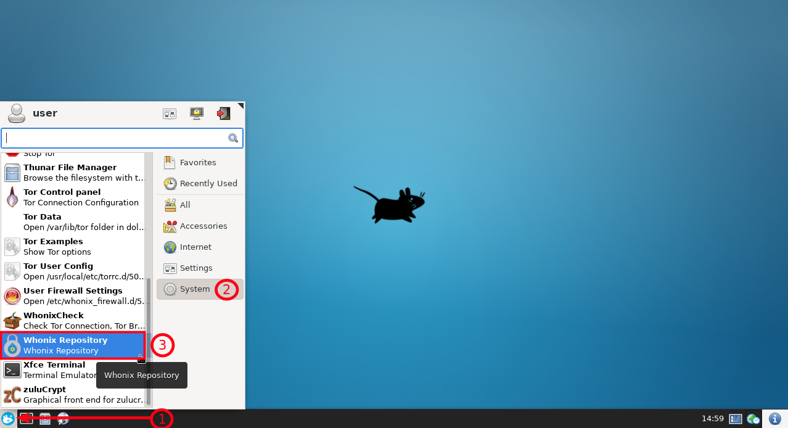
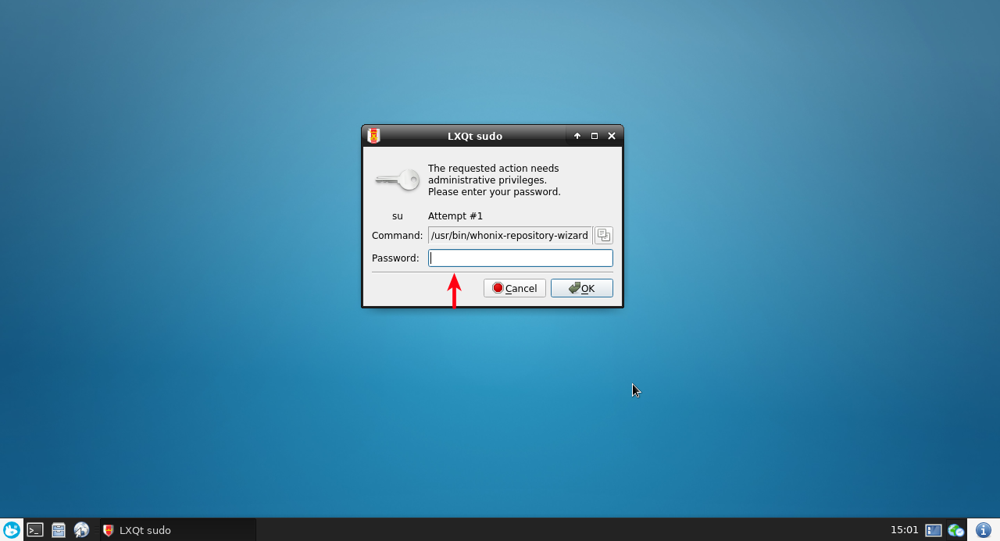
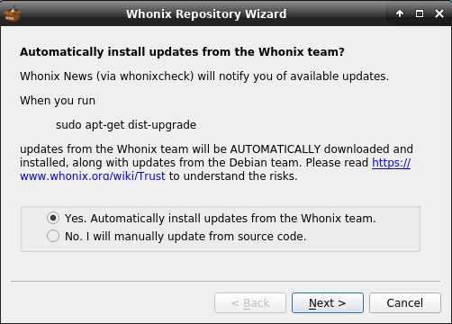
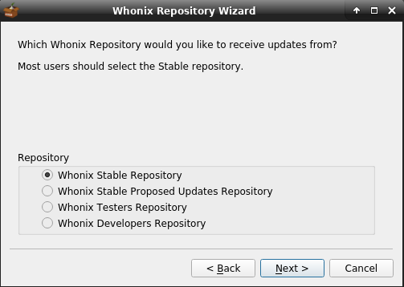
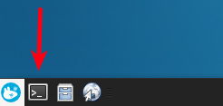
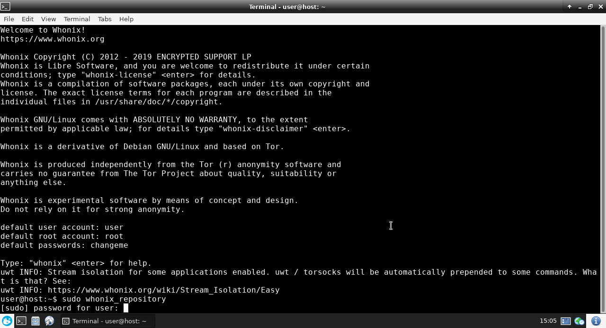

We believe security software like Whonix needs to remain Open Source and independent. Would you help sustain and grow the project? Learn more about our 11 year success story and maybe DONATE!
VirtualBoxDocumentationData Collection TechniquesPrevious page: VirtualBoxIndex page: DocumentationNext page: Data Collection TechniquesWhonix APT Repository

Whonix stable / testers / developers APT Repository. How to change from one suite to another? How to disable Whonix APT Repository?
Whonix APT Repository Overview
Whonix currently provides four repository choices:
- Whonix
stableAPT repository: Recommended for most users. The production level packages focus on providing the most reliable Whonix experience. [1] - Whonix
stable-proposed-updatesAPT repository: After testing by a wider audience, these packages migrate to the stable repository. [2] - Whonix
testersAPT repository: Recommended for testers, since it is only briefly tested by Whonix developers. It could break APT during an upgrade, requiring terminal commands to rectify the problem. [2] - Whonix
developersAPT repository: As above, except it includes untested changes. These changes may eventually migrate to the testers repository there is reasonable certainty that these changes will not break the update system. It is not recommended, unless the user is in touch with the development team.
Due to the Whonix design, a user's security is unlikely to be
materially affected by preferring the "beta"
(stable-proposed-updates) or "alpha" (testers)
repositories over the default stable one. [3]
Change Whonix APT Repository
It is easy for users to switch between Whonix repositories using the Graphical Whonix Derivative Repository Tool (GUI).
Qubes-Whonix™
If you are using Qubes-Whonix, please press Expand on the right.
Qubes App Launcher (blue/grey "Q") →
Template: whonix → Repository
Figure: Wizard Repository Selection

Figure: Wizard Auto-update Configuration
Whonix
If you are using Whonix, please press Expand on the right.
Start Menu → System →
Derivative Repository →
choose either "stable", "stable-proposed-updates" , "Testers" or "Developers" repository
Figure: Start Menu

Figure: super user password

Afterwards, the following window will appear.
Figure: Auto-update Configuration

Figure: Repository Selection

Command Line Interface
If you are a terminal user, please press Expand on the right.
In Terminal, run.
sudo repository-dist
Figure: Launch Terminal

Figure: Run repository-dist

Choose one of the following repositories based on personal preferences.
sudo repository-dist --enable --repository stable
sudo repository-dist --enable --repository stable-proposed-updates
sudo repository-dist --enable --repository testers
sudo repository-dist --enable --repository developers
To use the repository, follow the usual update instructions.
Onionizing Repository
This is not yet possible with the GUI. Only with the CLI.
See Onionize derivative.sources.
Disable Whonix APT Repository
For Trust reasons some users may prefer not to use Whonix APT Repository. In that case, it is necessary to update Debian packages in Whonix from source code, which is inconvenient.
All Default-Download-Version Whonix variants have the Whonix APT repository enabled. It can be disabled via the GUI or in a terminal with the Derivative Repository Tool.
Platform / Method |
Instructions |
|---|---|
Whonix Built from Source Code |
If Whonix is built from source code, Whonix APT Repository is not added by default. The only exception is if users opt in using a build configuration. It is also possible to verify that it is already disabled. |
Whonix Default-Download-Version: GUI |
|
Whonix Default-Download-Version: Terminal |
To disable it in a terminal, run. |
Users can optionally verify Whonix APT repository is disabled after this procedure.
Verify Whonix APT Repository is Disabled
To check the Whonix APT repository was successfully disabled, run the following tests.
1. Use apt-key.
sudo apt-key finger
This test should not show any Whonix-specific keys, such as Patrick Schleizer's OpenPGP key.
2. Check if file
/etc/apt/sources.list.d/derivative.sources exists.
If it does not exist, the procedure was successful.
3. Optional: conduct additional tests as a precaution.
Examine the /etc/apt/sources.list file. It should not
include the Whonix APT Repository.
cat /etc/apt/sources.list
Next examine the /etc/apt/sources.list.d/ folder as well.
cat /etc/apt/sources.list.d/*
Further Reading
- Trust
- Whonix Debian package - which ones are safe to remove?
- Building/upgrading Whonix Debian packages from source code
Footnotes
- If possible, users are requested to run a separate testers-only
Whonix-Gateway™ (
sys-whonix) and Whonix-Workstation™ (anon-whonix) that has thetestersrepository enabled. If too few people test Whonix, undiscovered issues might migrate to the stable repository. - Users are recommended to make a VM clone for this repository just in case it breaks. That way changes can be rolled back if necessary.
- The terms
alphaandbetaare avoided because they have generally lost their meaning in the software field; many applications remain inalphaorbetastatus for years, even though they work perfectly well.
Categories: Documentation